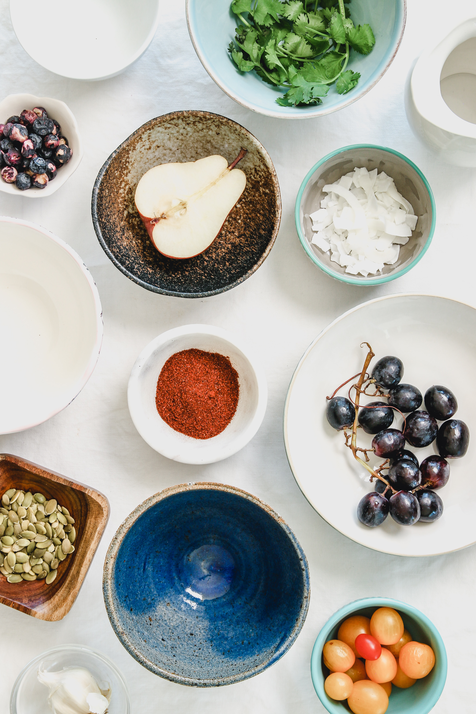

Diet tracking: How much is enough to lose weight?
Posted by The University Of Cincinatti on June 8, 2023
Keeping track of everything you eat and drink in a day is a tedious task that is tough to keep up with over time. Unfortunately, dutiful tracking is a vital component for successful weight loss, however, a new study finds that perfect tracking is not needed to achieve significant weight loss.
Article Link